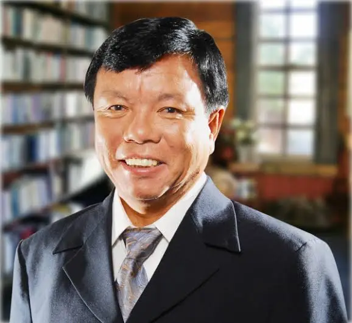

Mr.Mahabir Pun
January 22, 1955.
Innovation Man of Nepal
Mahabir Pun was born in a Magar family on January 22, 1955, in Nangi, a remote village in the mountainous Myagdi District of western Nepal. He spent his childhood grazing cattle and sheep and attending a village school without paper, pencils, textbooks or qualified teachers. Traditionally, the local people had no education, and most men joined the British [Gurkha] army. Mahabir Pun's life changed dramatically when his father, a retired Gurkha, moved the family to the southern plains of Nepal and invested their savings in his son's education.He passed his SLC in B.S. 2027 in 2nd division.
Biographie
- Mahabir Pun is a well-known social activist and innovator of Nepal.
- He was born in Ramche village, Myagdi district.
- He is famous for introducing wireless internet in rural Nepal.
- He played a key role in expanding internet access to remote areas.
- He is the founder of the National Innovation Center (NIC).
- He promotes research, innovation, and technology in Nepal.
- He supports youth involvement in science and invention.
- He has contributed to agriculture, health, and energy innovation.
- He is often called the “Innovation Man of Nepal”.
- His life inspires social change through technology.